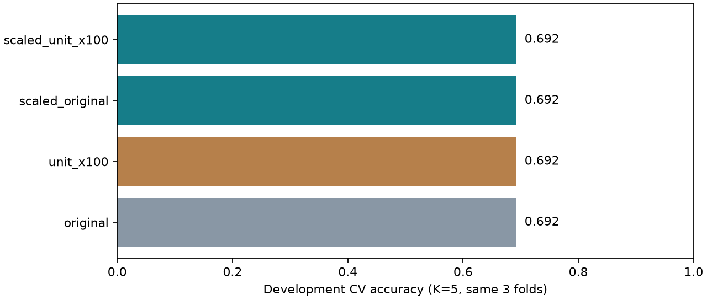

T11 · 机器学习 · 共同理论 · 2 学时
统一表示 → 计算距离 → 选出训练近邻 → 标签投票 → 用训练外记录评价
训练库 保存特征与标签
查询点 只有可用特征
最近 K 条 从训练记录中选择
投票 给出查询预测
查询点的真实标签只用于事后评价，不参与选邻居。
训练点 ，查询点 ：
约 7 分钟 · 欧氏距离 · 等权投票
| 点 | 坐标 | 标签 | 到 的距离平方 |
|---|---|---|---|
| A | 0 | 待计算 | |
| B | 1 | 待计算 | |
| C | 0 | 待计算 | |
| D | 1 | 待计算 |
按近到远排序；分别写出 与 的预测。
| 点 | 第一坐标平方差 | 第二坐标平方差 | 距离平方 |
|---|---|---|---|
| A | 3.24 | 0.01 | 3.25 |
| B | 0.04 | 0.81 | 0.85 |
| C | 3.24 | 3.61 | 6.85 |
| D | 0.04 | 8.41 | 8.45 |
从近到远为 B、A、C、D。 预测 1； 按 1、0、0 预测 0。
| 较小的 K | 较大的 K |
|---|---|
| 很近的少数记录影响大 | 更多记录参与决定 |
| 可能沿用单条噪声标签 | 可能混入另一片区域 |
查询点标签未知时，不能根据这一题判断哪个 K 更准。
候选 K 应在开发内评价；不能查看最终测试后再决定。
“邻居集合怎样确定”和“集合确定后怎样投票”是两个问题。
把所有点的第二坐标乘 100，第一坐标保持不变：
这可以看作米换成厘米。对象和观测没有改变，输入数字的表示改变了。
约 5 分钟 · 训练点与查询点使用同一单位
第二坐标差乘 100，平方差便乘 。原来 B 最近，换单位后 A 最近； 的预测从 1 变为 0。没有增加样本、特征或标签。
| 做法 | 距离是否有一致含义 |
|---|---|
| 训练点和查询点都换成厘米 | 是 |
| 训练点用厘米，查询点仍用米 | 否 |
| 两者使用同一训练变换 | 是 |
不同坐标的数值差直接进入距离，也就隐含了相对权重。
对第 个特征，只用训练记录计算：
约 6 分钟 · ·
| 点 | 标准化距离平方 |
|---|---|
| A | |
| B | |
| C | 6.128 |
| D | 6.768 |
标准化后从近到远仍为 B、A、C、D。
第二坐标乘 100：
适用条件：同一训练数据、正比例换算、原标准差非零。
在这些条件下，换单位前后的标准化坐标保持一致。
表示是否合理与预测是否更准，需要分别给出机制和训练外证据。
120 条开发记录，同一分层三折；每折 80 条训练、40 条验证。
| 条件 | 第一特征乘 100 | 折内标准化 |
|---|---|---|
| 原表示 | 否 | 否 |
| 单位变化 | 是 | 否 |
| 原表示标准化 | 否 | 是 |
| 单位变化后标准化 | 是 | 是 |
四个条件均固定 、等权欧氏距离，先折内中位数填补。
固定查询 C001：
| 表示 | 五个近邻 | 票数 | 预测 |
|---|---|---|---|
| 原表示 | C035 / C031 / C030 / C055 / C034 | 0 类 3 票 | 0 |
| 第一特征乘 100 | C086 / C087 / C035 / C031 / C055 | 0 类 3 票 | 0 |
两条记录被替换，但两组都以 3 比 2 预测类别 0。
标准化后的两种表示恢复为第一组邻居，全部验证预测也一致。

四个条件均判对 83/120，平均准确率约 0.6917。
但原表示与未标准化单位变化之间仍有 28 行预测不同：14 行由对变错，14 行由错变对。
折内训练 80 行
拟合变换 填补与尺度
建立邻居库 仍是训练行
验证查询 只 transform 与预测
把验证行加入邻居库，会让查询对象用到自身或其他评价对象的信息。
默认尺度 1、K=3：B/A/C 投票，预测 0。将尺度改为 100、K=1：A 最近，仍预测 0；只改尺度且 K=3 时为 A/B/C，预测 0。
| KNN 分类 | K-means 聚类 | |
|---|---|---|
| 是否使用训练标签 | 是 | 否 |
| K 的含义 | 参与投票的近邻数 | 簇或中心数 |
| 当前输出 | 查询对象的类别预测 | 整批对象的距离分组 |
下一讲将从“用邻居标签预测”转向“没有标签时怎样描述结构”。
约 5 分钟 · 独立完成 · 姓名________
每条都写出判断和依据；答案在教师材料中核对。
机器学习 · T11